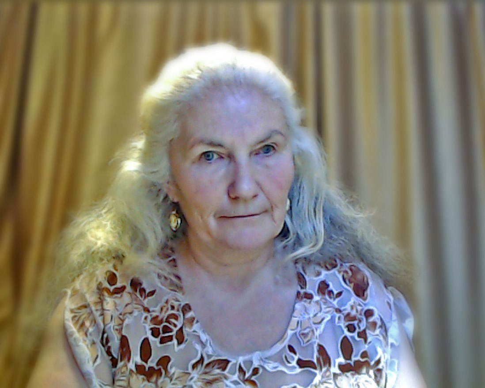

Игра в прятки и исцеление от зависимости — что общего между этими двумя понятиями?

Как спасти близкого человека? Как сделать так, чтобы, страдающие алкоголизмом соседи и “злоупотребляющие” друзья исчезли из круга общения твоей семьи?
Как воодушевить пьющего человека, чтобы он сам захотел избавиться от зависимости?
Я расскажу тебе.
Любовь и семья — вечная тема, которая никогда и никого не может оставить равнодушным. Дом — это то самое место, где Душа человека хочет найти понимания, тепла и уютного приятного взаимодействия. Когда этого не происходит, у человека не получается чувствовать себя по-настоящему счастливым. Разного рода зависимости - причина разрушения многих прекрасных и достойных союзов.
К сожалению случается, что люди расходятся. Но ведь также случается и так, что наболевшая проблема преследует человека уже и в новой семье. Развод — не выход. Для того, чтобы избежать негативного сценария и сохранить, брак нужно менять поведенческий паттерн в общении с супругом.
Вопрос смены негативного сценария личных отношений на позитивный является одним из наболевших.
Рассмотрим такой пример - женщина имеет супруга, склонного к алкогольной зависимости. Она терпит, просит, умоляет и получает множество обещаний, что подобное не повторится. Однако проходит время (у кого-то недели, а у кого-то часы,) и ситуация возникает вновь. Неважно, что спровоцировало рецидив. Обвинение плохого окружения и поиски виноватых не эффективны.
Разорвать этот замкнутый круг можно сменой реакции, которую не ожидает партнёр. Алкоголик - всегда манипулятор. В среде близких людей он выстраивает определенную модель игры, где каждый задействованный персонаж отыгрывает определенную роль. Все участники, как правило, отлично знают “сценарий, и поэтому очередной “уход от реальности в градусы” проходит в обстоятельствах, комфортных сумасбродству зависимого. Все это происходит, конечно, на подсознательном уровне — автоматически.
Проявлению зависимости можно помешать. Для этого окружению манипулятора нужно перестать играть по его правилам и установить другие условия — свои. А еще лучше обучить его новой “игре”.
Не случайно известная фраза о том, что все наши проблемы родом из детства, никогда не потеряет своей актуальности. Все люди невольно, в большей или меньшей степени, склонны копировать те семейные взаимоотношения, которые были приняты у них дома. Подсознание закрепляет это как образец. Конечно, это не означает, что отец-алкоголик гарантированно провоцирует появление алкоголика-зятя. Но это означает, что та маленькая девочка, которая привыкла к тому, что ее мама отыгрывает роль “жертвы” или, говоря проще, терпит выходки ее отца, став взрослой поступает точно также. Даже, если она на сознательном уровне осуждает мать, подсознание напоминает ей, что терпеть — это совершенно естественно. Поэтому ее муж не обязательно будет склонен к выпивке, он вполне может страдать иным видом зависимости или, скажем, быть склонным к проявлению домашнего насилия. Но свою “роль жертвы” девочка, скорее всего, отыграет по полной. Потому, что она просто не знает, как выстраивать отношения по-другому.
Sun bunny, Alex Chernigin (холст, масло 2019)
Ребенок, которого учили играть только в прятки, не умеет ловить зеркальцем солнечных зайчиков. Но начать успешно учиться этому ребенок, конечно, может. Даже, когда внешне он станет совсем-совсем большим.
Для формирования нового типа поведения, который будет автоматически купировать привычное поведение партнера, у женщины должно измениться многое — в первую очередь, мысли о себе, диктующие несвойственные ей, прежней, поступки. Вполне возможно перестать играть в столь “любимые прятки”, ведь прячась от взрослой проблемы, мы не решаем ее. Можно и нужно взять зеркальце, улыбнуться себе и научиться жонглировать лучиками в общении с партнером,открывая ему не только новый способ взаимоотношений, но и новое видение собственной жизни.
Создатель любит всех одинаково!
Если здоровые взаимоотношения существуют, в принципе, то нет причины довольствоваться иными.
При освоении любого навыка, у человека выстраиваются новые нейронные связи. Это своеобразный способ контакта и передачи информации между мозговыми клетками, отвечающий за слова и поступки, а следовательно и за мысли людей. Концентрируясь на повторении нужной ответной реакции на “злоупотребления” партнера снова и снова, женщина помогает росту и расширению своих новых нейронных связей. А, вырабатывая у себя, неожиданный для партнера, стиль поведения, женщина провоцирует партнера принять ее правила игры. Ему достаточно оказаться в одном эмоциональном и ментальном поле с супругой - одобрение и принятие происходит само собой, на уровне подсознания.
Если “новая игра” и методы ее освоения выбраны правильно, уже достаточно скоро женщина оставляет позицию “жертвы” и зависимый тип мышления в прошлом. Для правильного выбора нужен Проводник - Психолог или Целитель, который поможет главной героине нашего примера написать истинный сценарий своего женского счастья.
Благодаря нейронам солнечных зайчиков супруги, “обучение” зависимого другим “играм” происходит легче и естественнее.
А женщина теперь получает возможность выстраивать свои личные отношения в гармонии и взаимопонимании. И что не менее важно, личным примером учит своих детей избегать разрушительных паттернов взаимодействия.
Помогающий Специалист — человек, который видит суть проблемы и не является заинтересованной стороной со стороны одного из партнеров. Это максимально важно! Никакие друзья-советчики не могут претендовать на роль действительных помощников потому, что могут сочувствовать либо “жертве”, либо “зависимому”. Это касается также помощи родственников, которые невольно принимают сторону своего кровника.
Обращаясь за помощью, важно также избежать ловушек мошенников и самозванцев.
Объективность и непредвзятость — это важные характеристики, которыми может обладать только независимый Специалист.
Свидетельством истинных способностей и реальной оказанной людям помощи, является наличие положительных отзывов и благодарных рекомендаций.
Работа над собой — это всегда труд. Легко такие задачи не решаются. Это поиск нужных решений и способов взаимодействия не только с окружающим миром, но в первую очередь, с самой собой. Личное счастье — это не удел избранных. Никто не рожден для того, чтобы страдать. Создатель милостив и никогда не оставит без помощи человека, который хочет измениться к лучшему. Это касается также людей, которые запутались в своих зависимостях и видят, что не могут сами справиться с разрушением своей семьи. И совсем не просто так тем, кто всерьез задумывается о том, что пора что-то менять, Провидение помогло из огромного числа информационного потока сети открыть именно эту страницу. Конечно, не просто так вы оказались здесь. Это означает, что время действовать наступило.

Здравствуйте!)
Рада вам! Рада возможности использовать свой Дар для помощи людям!
Ведь на самом деле - когда, если не сейчас?)
Твой проводник в Любовь Тамара Шомина
Курс «ТАЙНА ИСЦЕЛЕНИЯ, или АНГЕЛ, ПРОСНИСЬ!»
31.01.2024